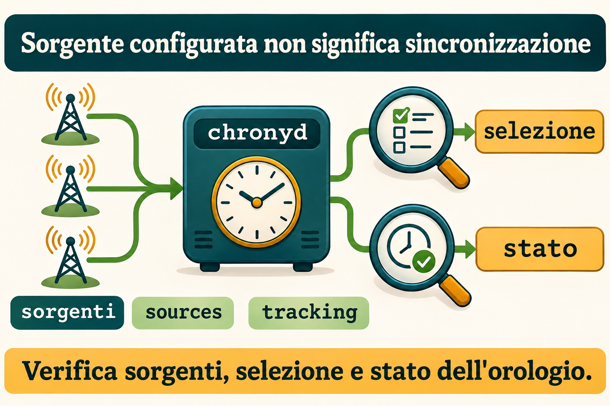

Lezione 14.4 · L'ora corretta
Hai già usato gli orari per pianificare lavori e analizzare i log. Ora separerai l'istante dell'orologio, il fuso che lo visualizza e la sorgente che lo sincronizza. L'obiettivo è diagnosticare senza introdurre salti d'ora sul server.
Il cuore di questa lezione: sorgente configurata, sorgente selezionata e orologio sincronizzato sono evidenze diverse. Nei test del fuso modifica soltanto la visualizzazione per processo. Il resto è approfondimento.
| Scheda | |
|---|---|
| Modulo | M14 · Pianificazione, log e ora, lezione 4 di 5 |
| Quando | Settimana 20 |
| Alla fine | Interpreti chrony, confronti i fusi e misuri una sorgente senza regolare l'orologio |
| Prerequisiti | Lezione 14.3; VM dedicate al corso, python3, student, sudo e console |
| Durata | Circa 90 minuti |
| Snapshot | m14a4-inicio e m14a4-fim sulle VM 201 e 202 |
1 · Riscaldamento
Rispondi prima di consultare l'orologio.
- Perché boot e intervallo fanno parte della ricerca nel journal?
- Perché la configurazione salvata di un servizio non dimostra un comportamento corretto?
- Perché cambiare l'ora può influire su un timer di calendario?
2 · Perché conta
Due host sembrano registrare lo stesso incidente in ordini opposti. Uno usa un altro fuso; l'altro ha perso la sincronizzazione. Confrontare soltanto l'ora stampata confonde visualizzazione e istante. Anche autenticazione, validità dei certificati e cronologia degli incidenti dipendono da un tempo coerente.
Non correggere uno scarto apparente digitando un'ora a memoria. Scopri prima il meccanismo attivo, le sue sorgenti e lo stato di sincronizzazione.
3 · Modello mentale
L'istante è il punto sulla linea temporale. Il fuso è la legenda dell'orologio sulla parete. La sorgente NTP aiuta il meccanismo a mantenere l'istante; cambiare legenda non corregge un meccanismo in ritardo.
sorgente -> misurazioni -> selezione -> orologio -> visualizzazione nel fuso
Ponte Windows
| Concetto | Linux |
|---|---|
| Servizio temporale | chronyd o il client effettivamente attivo |
| Sorgente configurata | Direttive server e pool |
| Stato e sorgenti | chronyc tracking, chronyc sources |
| Fuso del sistema | timedatectl status |
4 · L'essenziale
Un gestore per l'orologio
Non mettere due client a disciplinare lo stesso orologio. chrony e systemd-timesyncd sono alternative di client, non servizi da abilitare insieme per migliorare la precisione. La migrazione richiede di registrare la configurazione e pianificare il cambio.
Misurare, selezionare e sincronizzare
chronyc sources -v mostra sorgenti e indicatori di selezione. Il marcatore * identifica la sorgente selezionata. Una sorgente elencata non è necessariamente utilizzabile. chronyc tracking descrive come viene seguito l'orologio.
Reach è una cronologia di raggiungibilità rappresentata in ottale, non una percentuale. Leggi anche l'età dell'ultima risposta, lo stato della sorgente e lo stato leap del tracking. Non trasformare un solo numero in una diagnosi completa.


Il fuso è visualizzazione
La variabile TZ applicata a un comando cambia la visualizzazione di quel processo. L'esempio del lab usa lo stesso timestamp numerico per tre visualizzazioni. Non modifica il fuso globale né l'ora del sistema.
Misurazione senza correzione
chronyd -Q misura e indica lo scarto senza correggere l'orologio. -q, minuscola, regola una volta e ha un'altra finalità. In questo lab usa soltanto l'opzione maiuscola, con file isolato e tempo massimo.

Rocky × Debian
| Voce | Rocky 9 | Debian 13 |
|---|---|---|
| Pacchetto | chrony | chrony |
| Unità | chronyd.service | chrony.service |
| File principale | /etc/chrony.conf | /etc/chrony/chrony.conf |
| Installazione standard | Client chrony comune | Controlla se timesyncd è il client attuale |
5 · Lab guidato
La preparazione seguente installa chrony come unico client sulle VM del corso. Se esiste già un altro client o una sorgente personalizzata oltre a timesyncd standard, fermati per pianificare la migrazione. L'installazione può sostituire timesyncd; non applicare questo percorso a un server di produzione. La sincronizzazione normale può correggere uno scarto esistente, quindi esegui il cambio con snapshot, console e finestra definita.
Passo 1 · Proteggere e identificare
Ipotesi: il nome dell'unità chrony è uguale nelle due distribuzioni?
Sull'host Proxmox:
qm snapshot 201 m14a4-inicio
qm snapshot 202 m14a4-inicioSulle VM:
test ! -e "$HOME/m14a4"
mkdir -m 700 "$HOME/m14a4"
timedatectl status | tee "$HOME/m14a4/timedatectl.inicio"
systemctl is-active chronyd chrony systemd-timesyncd | tee "$HOME/m14a4/clients.inicio"
readlink -f /etc/localtime | tee "$HOME/m14a4/timezone.inicio"Conferma che questa sia la VM di laboratorio e che il cambio sia stato pianificato prima di eseguire l'installazione. Su Rocky:
sudo dnf install -y chrony
sudo systemctl enable --now chronydSu Debian, con soltanto timesyncd standard oppure chrony come client precedente:
if systemctl is-active --quiet systemd-timesyncd; then
sudo systemctl disable --now systemd-timesyncd
fi
sudo apt install -y chrony
sudo systemctl enable --now chronyNon configurare una sorgente inventata. Conserva le sorgenti autorizzate già esistenti; in una nuova installazione leggi la configurazione fornita dal pacchetto e verificane l'autorizzazione nell'ambiente prima di proseguire. Il client chrony resta come stato finale del corso.
test -x /usr/sbin/chronyd
command -v chronyc python3
systemctl is-active chronyd chrony systemd-timesyncdOutput atteso: client chrony attivo nell'unità della distribuzione e nessun secondo client attivo che regoli l'orologio. Nelle altre posizioni possono comparire unità inesistenti o inattive.
Verifica: se questa preparazione non è pronta, fermati prima dei test. Non usare timedatectl set-ntp senza sapere quale client selezionerà. timedatectl set-timezone sarebbe una modifica globale del fuso; questa lezione usa soltanto TZ per processo e non esegue quella modifica.
Passo 2 · Leggere l'evidenza del client
Ipotesi: una sorgente configurata è già selezionata?
sudo chronyc -n sources -v | tee "$HOME/m14a4/sources.inicio"
sudo chronyc tracking | tee "$HOME/m14a4/tracking.inicio"
sudo chronyc activityOutput atteso: valori reali del client. Individua se esiste una sorgente selezionata e se il tracking indica sincronizzazione; se manca, registra la condizione invece di inventare un campione normale.
Verifica: collega indirizzo della sorgente, selezione e stato. Servizio attivo non significa orologio sincronizzato.
Passo 3 · Confrontare lo stesso istante
Ipotesi: i tre comandi seguenti rappresenteranno tre istanti diversi?
STAMP=$(date +%s)
printf '%s\n' "$STAMP" > "$HOME/m14a4/epoch"
TZ=UTC date -d "@$STAMP" '+%Y-%m-%dT%H:%M:%S%z'
TZ=Europe/Rome date -d "@$STAMP" '+%Y-%m-%dT%H:%M:%S%z'
TZ=America/Sao_Paulo date -d "@$STAMP" '+%Y-%m-%dT%H:%M:%S%z'
readlink -f /etc/localtimeOutput atteso: visualizzazioni con i propri offset per lo stesso timestamp. Il fuso globale resta uguale a quello iniziale.
Verifica: controlla l'offset, non soltanto le cifre dell'ora. Le regole stagionali dipendono dalla data dell'istante consultato.
Decidi 1
| Opzione | Due orari stampati differiscono |
|---|---|
| A | Modificare subito l'orologio |
| B | Confrontare istante, offset e sorgente di sincronizzazione |
| C | Scegliere l'orario visivamente più vicino |
Scegli B. Una differenza di visualizzazione non dimostra uno scarto dell'orologio.
Passo 4 · Scrivere una candidata isolata
Ipotesi: validare la sintassi interroga già la sorgente?
Scegli un IP NTP autorizzato dell'ambiente, ottenuto dall'inventario reale delle sorgenti. Non usare un indirizzo casuale né presumere che il gateway offra NTP.
read -r -p 'Authorized NTP IP: ' NTP_IP
python3 -c 'import ipaddress,sys; print(ipaddress.ip_address(sys.argv[1]))' "$NTP_IP"Se la validazione dell'IP fallisce, fermati e correggi l'input prima di creare il file.
Sulla debian-lab, il profilo AppArmor di chronyd permette di leggere configurazioni solo dentro /etc/chrony/. Una candidata in $HOME dà Permission denied. Per questo le candidate stanno in una cartella definita da C. Se apri un nuovo terminale, definisci di nuovo C.
C="$HOME/m14a4"
if command -v apt >/dev/null; then
# guardia: crea la cartella solo sulla debian-lab
C=/etc/chrony/m14a4
sudo install -d -o "$USER" -g "$USER" -m 755 "$C"
fi
echo "$C"printf 'server %s iburst\nport 0\ncmdport 0\n' "$NTP_IP" > "$C/chrony.conf"
/usr/sbin/chronyd -p -f "$C/chrony.conf"Output atteso: la candidata viene interpretata senza avviare una regolazione dell'orologio. Non ci sono driftfile, comandi di regolazione né file globali modificati.
Verifica: individua l'IP scelto e l'assenza di direttive che richiedano privilegi per questo test.
Passo 5 · Misurare senza regolare
Ipotesi: che cosa rende questa esecuzione diversa da una regolazione singola dell'orologio?
Esegui come student, senza sudo. L'opzione è -Q, maiuscola.
/usr/sbin/chronyd -Q -t 15 -f "$C/chrony.conf"Output atteso: lo strumento termina con una misurazione quando ottiene campioni utilizzabili, oppure termina per il limite temporale se non riesce. Questa esecuzione non esegue alcuna correzione dell'orologio.
Verifica: confronta la misurazione con lo stato del client attivo. La ricerca aggiuntiva non ha sostituito il daemon né reso persistente quella candidata.
Decidi 2
| Opzione | La sorgente non ha risposto entro il limite |
|---|---|
| A | Verificare IP, servizio NTP e percorso UDP autorizzato |
| B | Trasformare l'host in server temporale senza sorgente |
| C | Cambiare l'ora manualmente |
Scegli A. L'assenza di un campione utilizzabile non fornisce un'ora corretta da digitare.
Passo 6 · Correlare journal e boot
Ipotesi: visualizzare il journal in UTC elimina il fuso usato dal sistema?
logger -t m14a4 "M14A4 epoch=$STAMP"
sudo journalctl -t m14a4 --since '-5 minutes' -o short-iso --no-pager
sudo journalctl --utc -t m14a4 --since '-5 minutes' -o short-iso --no-pager
sudo systemctl rebootDopo esserti ricollegato:
timedatectl status
sudo chronyc tracking
sudo chronyc -n sources -v
readlink -f /etc/localtimeOutput atteso: il client normale torna e il fuso resta uguale. Il journal può visualizzare lo stesso evento in UTC senza riscriverne l'istante.
Verifica: la candidata isolata non è stata installata nel daemon. Lo stato persistente verificato è quello del client chrony attivato nella preparazione.
6 · Rompi e ripara
Guasto 1 · Nome del fuso non valido
Sintomo: il nome digitato non corrisponde a una zona installata.
Indagine: confronta il percorso errato con l'elenco disponibile.
test -e /usr/share/zoneinfo/Europ/Rome
timedatectl list-timezones | grep '^Europe/Rome$'Causa: errore nell'identificatore. Una variabile TZ non valida può ricevere un'interpretazione alternativa; un output stampato non valida da solo il nome.
Riparazione: usa la zona esistente soltanto nel comando di visualizzazione.
TZ=Europe/Rome date -d "@$(cat "$HOME/m14a4/epoch")" -IsVerifica: il fuso globale resta uguale a quello registrato.
Prevenzione: seleziona nomi dalla base installata.
Guasto 2 · Candidata con direttiva inesistente
Sintomo: la candidata non supera più il lettore della configurazione.
Indagine: introduci la riga soltanto nella copia privata.
cp "$C/chrony.conf" "$C/chrony.good"
printf 'm14_invalid yes\n' >> "$C/chrony.conf"
/usr/sbin/chronyd -p -f "$C/chrony.conf"Causa: la direttiva non viene riconosciuta. Il client attivo continua con la configurazione originale.
Riparazione: ripristina cp "$C/chrony.good" "$C/chrony.conf".
Verifica: la lettura con -p torna a passare.
Prevenzione: valida prima di pianificare qualsiasi sostituzione della configurazione attiva.
Guasto 3 · Sorgente senza server
Sintomo: una ricerca isolata non ottiene un campione utilizzabile.
Indagine: conferma che non esista un server NTP all'indirizzo di loopback riservato al guasto e crea un'altra candidata. Non toccare il client attivo.
sudo ss -lunp 'sport = :123'
printf 'server 127.0.0.2 iburst\nport 0\ncmdport 0\n' > "$C/chrony.bad-source"
/usr/sbin/chronyd -Q -t 5 -f "$C/chrony.bad-source"Causa: quella destinazione non offre NTP nel lab. Non è un problema di visualizzazione del fuso.
Riparazione: torna alla candidata con la sorgente autorizzata e confermata.
Verifica: il client attivo resta consultabile con chronyc tracking.
Prevenzione: verifica disponibilità e autorizzazione della sorgente; non usare soltanto l'esistenza della riga nel file.
Pulizia
Le esecuzioni -Q terminano da sole. Il client chrony installato resta intenzionalmente attivo; la configurazione candidata non ha mai sostituito la sua. Non è stata esportata globalmente alcuna variabile di fuso e non deve restare avviato un daemon concorrente. Conserva i file privati come evidenza.
readlink -f /etc/localtime
sudo chronyc tracking
sudo chronyc -n sources -vSulla debian-lab, rimuovi anche la cartella delle candidate: sudo rm -rf /etc/chrony/m14a4.
Confronta il fuso con timezone.inicio. La sincronizzazione resta sotto l'unico client installato e attivato nella preparazione di questa lezione.
7 · Trappole
| Errore | Che cosa fare | Motivo |
|---|---|---|
| Ora visiva diversa significa orologio errato | Confrontare istante e offset | I fusi visualizzano lo stesso istante |
| Servizio attivo significa sincronizzato | Leggere sorgenti e tracking | Può mancare una sorgente utilizzabile |
Confondere -q e -Q | Controllare l'opzione prima di eseguire | Una regola; l'altra misura |
| Abilitare due client | Pianificare un solo gestore | Evita regolazioni concorrenti |
8 · Quiz
- Fuso e istante sono la stessa cosa?
- Che cosa mostra
sourcesoltre all'elenco delle sorgenti? - Reach è una percentuale?
- Quale opzione di chronyd misura senza correggere?
- Perché non installare silenziosamente un altro client?
- Come confronti eventi di host con fusi diversi?
9 · Promemoria
| Operazione | Comando |
|---|---|
| Stato generale | timedatectl status |
| Sorgenti e selezione | chronyc -n sources -v |
| Monitoraggio | chronyc tracking |
| Journal in UTC | sudo journalctl --utc -t m14a4 |
Flashcard: crea cinque schede su istante, fuso, selezione, tracking e misurazione senza regolazione. Ripassa a D+1, D+3, D+7 e D+21.
10 · Checklist e chiusura
- [ ] Ho identificato l'unico client attivo.
- [ ] Ho confrontato lo stesso istante in tre fusi senza modificare l'orologio.
- [ ] Ho verificato soltanto candidate isolate con misurazione senza regolazione.
Ultimo esercizio: scrivi come distinguere fuso errato, sorgente indisponibile e client ancora non sincronizzato.
Reboot di verifica: riavvia le due VM e controlla client, sorgenti e fuso conservati, senza usare una regolazione manuale per produrre una schermata prevista.
sudo systemctl rebootSull'host Proxmox:
qm snapshot 201 m14a4-fim
qm snapshot 202 m14a4-fim11 · Nella vita reale
Su un host autorizzato leggi stato, sorgenti, fuso e visualizzazione UTC di un intervallo noto del journal. Non regolare l'ora, non cambiare client e non forzare un salto in questa missione. Registra ciò che dimostra sincronizzazione e ciò che dimostra soltanto visualizzazione.
12 · Approfondire quando vuoi
- chronyd(8), chronyc(1) e chrony.conf(5): client, sorgenti e misurazione.
- timedatectl(1): ricerca e modifiche globali non usate in questo lab.
DeepTutor (http://10.1.0.149:3782, KB "Curso Linux Sysadmin"):
!explica Separe instante, fuso, fonte NTP e sincronização do relógio.!feynman Vou explicar por que um serviço de hora ativo pode não estar sincronizado. Critique minha explicação.!quiz Crie seis diagnósticos de hora sem alterar o relógio real do servidor.
Soluzioni commentate
Riscaldamento
- Delimitano l'insieme ricercato e possono escludere l'evento.
- La sorgente può essere indisponibile anche con una configurazione valida.
- La pianificazione civile dipende dagli orari calcolati dall'orologio e dal fuso.
Quiz
- No; uno è visualizzazione, l'altro è il punto sulla linea temporale.
- Stato di selezione, raggiungibilità e informazioni dei campioni.
- No; è una cronologia in ottale.
-Q, maiuscola.- L'installazione può sostituire il gestore attuale dell'orologio oppure competere con esso.
- Normalizza la visualizzazione e controlla lo stato degli orologi, non soltanto il testo dell'ora.
← Lezione 14.3 · journald e rsyslog · Indice delle lezioni · Piano del corso: dalla 14.5 in poi →